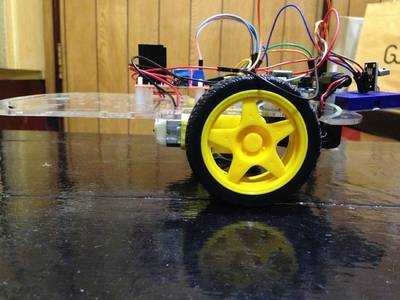

2016-09-22 - Nº 73

Editorial
Esta é a Newsletter Nº 73 que se apresenta com o mesmo formato que as anteriores. Se gostar da Newsletter partilhe-a!
Todas as Newsletters encontram-se indexadas no link.
Esta Newsletter tem os seguintes tópicos:
Faz hoje 225 que nasceu o físico Michael Faraday. Este brilhante cientista Inglês contribuiu para avanços muito significativos nas áreas do electromagnetismo e da electroquímica. As suas principais descobertas incluem os princípios subjacentes à indução electromagnética, ao dia-magnetismo e à electrólise. Ficou imortalizado pela unidade Farad, que representa a capacitância eléctrica - capacidade de um corpo armazenar carga eléctrica. Esta semana ficámos a saber que a primeira estação espacial chinesa - Tiangong-1 - está fora de controlo e irá despenhar-se na terra algures em 2017. Esta estação tem 8.5 toneladas de peso e foi lançada em 2011. A Apple lançou a nova versão do seu sistema operativo MacOS Sierra duas semanas depois do lançamento do seu ultimo iPhone. A ARM lançou esta semana o seu ARM Cortex-R52. Trata-se de um processador real-time com funcionalidades de segurança avançadas para veículos autónomos e robôs médicos e industriais. A STMicroelectronics já anunciou que irá licenciar esta versão do processador. Foi lançada uma nova versão do Arduino IDE - 1.6.12 - que suporta o novo sistema operativo da Apple e que inclui uma integração experimental com o Arduino Cloud API.
Na Newsletter desta semana apresentamos diversos projetos de maker assim como alguns modelos 3D que poderão ser úteis.
 João Alves ([email protected])
João Alves ([email protected])
O conteúdo da Newsletter encontra-se sob a licença  Creative Commons Attribution-NonCommercial-ShareAlike 4.0 International License.
Creative Commons Attribution-NonCommercial-ShareAlike 4.0 International License.
Novidades da Semana ^
China's Tiangong-1 space station 'out of control' and will crash to Earth
"Chinas first space station is expected to come crashing down to Earth next year, fuelling concerns that Chinese space authorities have lost control of the 8.5-tonne module. The Tiangong-1 or Heavenly Palace lab was described as a potent political symbol of Chinas growing power when it was launched in 2011 as part of an ambitious scientific push to turn China into a space superpower. However, speaking at a satellite launch centre in the Gobi Desert last week officials said the unmanned module had now comprehensively fulfilled its historical mission and was set to re-enter the earths atmosphere at some point in the second half of 2017." [...]
IDE 1.6.12 released with Sierra support and more
"A new version of the Arduino IDE (1.6.12) supporting OSX Sierra is available for download! All OSX users updating to Sierra are invited to also update the IDE to avoid crashes when uploading sketches. This update includes an experimental integration with Arduino Cloud API already used by Arduino Create. The Arduino Cloud is simple tool to connect your Arduinos to the Internet and to each other. From now on, when you insert for the first time an Arduino/Genuino or AtHeart board which needs an additional core, you will be prompted to automagically install its bundled software. Youll notice that the example menu has been reorganized, making it much more consistent and easier to navigate." [...]
macOS Sierra Now Available as a Free Update
"Apple today announced that macOS Sierra, the latest major release of the worlds most advanced desktop operating system, is now available as a free update. macOS Sierra brings Siri to the Mac with intelligent and helpful features users know and love from iPhone and iPad, along with all-new capabilities designed specifically for use on the desktop. Features like Universal Clipboard, iCloud Desktop and Documents, Auto Unlock and Apple Pay on the web help your Mac work even better with other Apple devices. And Photos gets an update with a new Memories feature that automatically creates curated collections of your favorite photos and videos." [...]
ARM enables autonomous vehicles with its most advanced safety processor
"ARM has launched a new real-time processor with advanced safety features for autonomous vehicles and medical and industrial robots. The ARM Cortex-R52 was designed to address functional safety in systems that must comply with ISO 26262 ASIL D and IEC 61508 SIL 3, the most stringent safety standards in the automotive and industrial markets. The Cortex-R52 is ideally-suited for systems that demand advanced safety features alongside efficient and responsive execution. It will enable applications as diverse as surgical automation, safety management and automotive powertrain control. STMicroelectronics is the first ARM partner to announce it has licensed the high performance processor to enable it to create highly integrated SoCs for the automotive market." [...]
Outras Notícias
- Microchip Debuts New Development Board for Designing with 16-bit and 32-bit PIC Microcontrollers
- Toshibas development of low-power multi-hop wireless network technology that can operate on battery power for 10 years
- HTML 5.1 - W3C Proposed Recommendation, 15 September 2016
- STMicroelectronics Empowers Wireless IoT-Device Developers with New LoRa Kit Leveraging STM32 Microcontroller Ecosystem
- Microsoft Develops AI to Help Cancer Doctors Find the Right Treatments
Ciência e Tecnologia ^
Stanford-led team reveals nanoscale secrets of rechargeable batteries
"Better batteries that charge quickly and last a long time are a brass ring for engineers. But despite decades of research and innovation, a fundamental understanding of exactly how batteries work at the smallest of scales has remained elusive. In a paper published this week in the journal Science, a team led by William Chueh, an assistant professor of materials science and engineering at Stanford and a faculty scientist at the Department of Energys SLAC National Accelerator Laboratory, has devised a way to peer as never before into the electrochemical reaction that fuels the most common rechargeable cell in use today: the lithium-ion battery." [...]
Replicating the connection between muscles and nerves
"MIT engineers have developed a microfluidic device that replicates the neuromuscular junction the vital connection where nerve meets muscle. The device, about the size of a U.S. quarter, contains a single muscle strip and a small set of motor neurons. Researchers can influence and observe the interactions between the two, within a realistic, three-dimensional matrix. The researchers genetically modified the neurons in the device to respond to light. By shining light directly on the neurons, they can precisely stimulate these cells, which in turn send signals to excite the muscle fiber. The researchers also measured the force the muscle exerts within the device as it twitches or contracts in response." [...]
Liquid light switch could enable more powerful electronics
"Researchers have built a miniature electro-optical switch which can change the spin or angular momentum of a liquid form of light by applying electric fields to a semiconductor device a millionth of a metre in size. Their results, reported in the journal Nature Materials, demonstrate how to bridge the gap between light and electricity, which could enable the development of ever faster and smaller electronics. There is a fundamental disparity between the way in which information is processed and transmitted by current technologies. To process information, electrical charges are moved around on semiconductor chips; and to transmit it, light flashes are sent down optical fibres. Current methods of converting between electrical and optical signals are both inefficient and slow, and researchers have been searching for ways to incorporate the two." [...]
DuoSkin - Rapidly prototyping on-skin user interfaces using skin-friendly materials
"DuoSkin is a fabrication process that enables anyone to create customized functional devices that can be attached directly on their skin. Using gold metal leaf, a material that is cheap, skin-friendly, and robust for everyday wear, we demonstrate three types of on-skin interfaces: sensing touch input, displaying output, and wireless communication. DuoSkin draws from the aesthetics found in metallic jewelry-like temporary tattoos to create on-skin devices which resemble jewelry. DuoSkin devices enable users to control their mobile devices, display information, and store information on their skin while serving as a statement of personal style. We believe that in the future, on-skin electronics will no longer be black-boxed and mystified; instead, they will converge towards the user friendliness, extensibility, and aesthetics of body decorations, forming a DuoSkin integrated to the extent that it has seemingly disappeared." [...]
Sponge creates steam using ambient sunlight
"How do you boil water? Eschewing the traditional kettle and flame, MIT engineers have invented a bubble-wrapped, sponge-like device that soaks up natural sunlight and heats water to boiling temperatures, generating steam through its pores. The design, which the researchers call a solar vapor generator, requires no expensive mirrors or lenses to concentrate the sunlight, but instead relies on a combination of relatively low-tech materials to capture ambient sunlight and concentrate it as heat. The heat is then directed toward the pores of the sponge, which draw water up and release it as steam. From their experiments including one in which they simply placed the solar sponge on the roof of MITs Building 3 the researchers found the structure heated water to its boiling temperature of 100 degrees Celsius, even on relatively cool, overcast days. The sponge also converted 20 percent of the incoming sunlight to steam." [...]
Turing learning: a metric-free approach to inferring behavior and its application to swarms
"We propose Turing Learning, a novel system identification method for inferring behavior. Turing Learning simultaneously optimizes models and classifiers. The classifiers are provided with data samples from both an agent and models under observation, and are rewarded for discriminating between them. Conversely, the models are rewarded for 'tricking' the classifiers into categorizing them as the agent. Unlike other methods for system identification, Turing Learning does not require predefined metrics to quantify the difference between the agent and models. We present two case studies with swarms of simulated robots that show that Turing Learning outperforms a metric-based system identification method in terms of model accuracy. It also produces a useful byproduct in the form of classifiers that can be used to detect abnormal behavior in the swarm. Moreover, we show that Turing Learning also successfully infers the behavior of physical robot swarms. The results show that collective behaviors can be directly inferred from motion trajectories of individual agents in the swarm, which may have significant implications for the study of animal collectives. Furthermore, Turing Learning could prove useful wherever a behavior is not easily characterizable using metrics, making it suitable for a wide range of applications." [...]
Modelos 3D ^
Com a disponibilidade de ferramentas que permitem dar azo a nossa imaginação na criação de peças 3D e espaços como o thingiverse para as publicar, esta rubrica apresenta alguns modelos selecionados que poderão ser úteis.
Growing Shelf
"Need a full color shelf that can be adapted to any space and make it grow until it fills the entire room? Is your printed bored with nothing to do?? This one may be useful for you! This is a set of pieces that you can join and make any figure you can imagine. I'm using it for making nice shelves to store figurines, small stuff (or not so small) and has the posibility to add more parts in order to make the shelves 'grows'. The concept it's simple and is inspired by Edge Wang Tiles and the bitmasking technique used in terrain/dungeon making in lots of games. See what are i'm talking about here : http://www.cr31.co.uk/stagecast/wang/2edge.html You can combine different sizes to make nicer modules and also have more flexibility building big ones." [...]
NUT JOB | Nut, Bolt, Washer and Threaded Rod Factory
"Generate your own nuts, bolts, washers and threaded rod by simply typing the required parameters into customizer. Great for replacing metal equivalents in many applications such as the ROLLER RING | Universal Filament Spool Holder http://www.thingiverse.com/thing:176442. Includes options to generate WingNuts for easy hand tightening and removal. Now includes socket cap, socket button and socket countersunk head types with support for socket, phillips and slot drives. You can also join threaded rod to form unlimited lengths by creating a custom extended joiner nut. Uses the PolyScrewThread library from http://www.thingiverse.com/thing:8796 NEW Updated version 6/3/2016: added extended options to control number of facets on nuts, square sockets (or any number of facets) and socket depth control." [...]
Double geared hinge
"Pushing the concept of the geared hinge further, here is a double geared hinge! Note that I re-designed the scad file a little bit; you can even generate the parts for the simple geared hinge." [...]
Projetos Maker ^
Diversos Projetos interessantes.
ESP8266 Wifi enabled 864 pixel LED matrix display
"This project is a modification of my previous Bluetooth-enabled LED matrix display project, which used 864 monochromatic LED matrix (total 512 LEDs) for displaying scrolling text message. The original project used Bluetooth for display data transfer from a smartphone, but this one now uses Wifi. The display message is sent through web browser to a ESP8266 module that is configured as a web-server. No Arduino or any other microcontroller is used. ESP8266 alone works as a WiFi server and drives the MAX7219-based LED matrices." [...]
How to run C programs on the BeagleBone's PRU microcontrollers
"This article describes how to write C programs for the BeagleBone's microcontrollers. The BeagleBone Black is an inexpensive, credit-card sized computer that has two built-in microcontrollers called PRUs. By using the PRUs, you can implement real-time functionality that isn't possible in Linux. The PRU microcontrollers can be programmed in C using an IDE, which is much easier than low-level assembler programming. I recently wrote an article about the PRU microcontrollers, explaining how to program them in assembler and describing how they interact with the main ARM processor; so read it for more background." [...]
Pathfinder - Haptic Navigation
"Pathfinder is a wearable device that translates distance into haptic feedback. Users just wear the wristband (or glove) and point at objects up to 500 centimeters away, and feel gentle pulses at their fingertips corresponding to the object's distance. Its designed to give the user greater freedom of motion and longer operational range than traditional navigation solutions for the blind, such as the cane. I incorporated research ranging from embedded electronics to the neuroscience of touch to turn this simple concept into the best prototype I could, before sharing the device with my local community center for the blind." [...]
Make a Camera Slider by Makeblock
"Have you ever imagined that you can also DIY your own camera slider? Yes, you saw it right! You just need several beams, a stepper motor, a MegaPi to build the main part, then a synchronous belt, and now your camera slider is done. As you see, the camera is fixed on the camera slider to take photos of the scene in front of it. Wow, it is so cool, isn't it? learn more" [...]
Make your own Motorized Camera Slider
"In this project I will show you how I repurposed two old camera tripods in order to create a motorized camera slider. The mechanical system consist mostly of aluminium and stainless steel which makes the slider sturdy and pretty decent looking. The electrical system consists of an Arduino Nano with LCD, rotary encoder, limit switches and stepper motor. Let's get started!" [...]
Low noise Mini Electret Microphone PreAmplifier
"The single supply microphone pre-amplifier amplifies the output signal of an electret capsule microphone to audio line levels. An op amp is used as a trans-impedance amplifier to convert the output current from the microphone in to a signal level voltage. The circuit works with 9V so it is good choice for battery operated systems." [...]
Magnet Polarity Detector
"So many shape and type of magnets, like neodymium magnets, ring magnets and anything. But sometimes we need to identify the polarity, and its not easy to identify it. So, in this instructables, i will show you some great idea, how to make Magnet Polarity Detector. And the best thing of this project is you can make a switch using this tools." [...]
8 Channel Relay Board with onboard 5V regulator
"This is a general purpose relay board accepting 8 inputs to drive 8 relays providing control requirement in your project. This board can also be used as an add-on card for the various Development board that we provide and various microcontroller boards." [...]
Arduino Ping Pong Ball Cannon
"This instructable uses a Trossen Robotics Pan and Tilt kit to construct an Arduino controlled ping pong ball cannon. The project also uses several other components from Trossen Robotics including a medium solenoid, a relay and various items from one of their Robotics Grab Bags. A joystick controls the aiming of the cannon and a pushbutton controls the solenoid that fires the cannon." [...]
555 Super-Regenerative IF HF Spectrum Analyser
"This is another of those crazy ideas that have been rolling around in my head for a while now. I have previously used super-regenerative circuits as logarithmic detectors, and built super-regenerative super-heterodyne receivers - it wasn't a huge leap to build a swept front-end and turn the combination into a simple spectrum analyser. The recent announcement of a 555 Contest by Chris Gammell and Jeri Ellsworth had me playing with 555 circuits and this was all the encouragement I needed to finally go ahead and do it. The end result is a toy SA adapter for your CRO, but is still useful instrument (and it fits in an Altoids tin)." [...]
Tetris Clone with OLED SSD1306(I2C) for Arduino Nano / Uno
"This Instructable is about getting Tiny Tetris running on a 128x64 OLED display using an Arduino Nano or Uno." [...]
Simple Arduino-based thermometer
"Building an Arduino project isn't just about making all the components talk to one another. It's about creating an actual object or prototype out of your small creation, and giving it that extra touch that makes it unique. For this next project, we took some very basic components: a one-wire temperature sensor and a 7-segment LCD. For the extra flavoring, we used SUGRU, a really cool material that works great with electronics, and helped us transform this simple project into something with a spark." [...]
Basic Cell Phone Detector
"The basic principle behind this circuit is the idea of using a Schottky diode to detect the cell phone signal." [...]
Arduino oscilloscope
"A very basic and easy to make arduino PC oscilloscope." [...]
Web-based Garage Controller
"Internet based garage controller with auto-close. Interact via web interface to see status, toggle, change auto-close time, and last action." [...]
Simple Red Laser
"Hi friends. Today in this instructable, I am going to show you how to make simple red laser. You must have seen that lasers require a lot of complex circuits using various types of ICs and transistors. Today, in this instructables, we are going to make a very simple laser which will cost you less. So lets start making the laser !!!" [...]
How to make universal battery charger
"In this Instructable I would like to share with you my most recent project, an AVR-based universal battery charger. What does it mean universal battery charger? Well, it can charge batteries. And it can charge all four basic types of rechargeable batteries - that is, NiCd, NiMH (usually in AA or AAA form), lithium cells (usually in the form of 18650 cells) and lead-based batteries (those 12V blocks). On each battery type, you can set multiple charging parameters." [...]
How to make your own WIFI Gateway to connect your Arduino to IP Network ?
"As so many people you think Arduino is a very good solution to do domotic and robotic ! But in term of communication Arduinos just come with serial links. I am working on a robot that need to be permanently connected with a server that runs artificial intelligence code. I tried to use RF network as I am used to do for domotic but it is not efficient enough. As the robot moves I can not use the Ethernet Arduino Shield. Arduino Wifi Shield are expensive and seems to me to be old design." [...]
Lightning LED RGB cloud with mechanical switch
"This instructable is for people who wants to make a bit more advanced version of the typical lightning LED cloud. This one is made with a mechanical switch instead of the versions with a normal IR remote. I find that remotes are often misplaced or for this project unnecessary. I made this as a birthday present for my niece which it is made without sound. I wanted to spare the parents." [...]
Experimenting with MAX6955
"MAX6955 is an interesting LED driver chip. It is the primordial charlieplexing device, being the materialization of a technique invented by Charlie Allen of Maxim Integrated. Without understanding how charelieplexing works, it is actually counter-intuitive to wire multiple (up to 8) 16-segment displays to such a driver chip. Fortunately, Maxim has great documentation on how to do it." [...]
Animated LED Scarf
"This project was inspired by Liana B's LED Scarf, the Pixel Boa from Mood Hoops, Erin St Blaine's Animated Neopixel Glow Fur Scarf, and the wonderful folks with the FastLED library. For simplicity (in some cases more than others, as I'll describe), we used the browser-based www.Codebender.cc to share code & program things. I put together the plans for this project and helped 6 friends build their own scarves for burning man. By pooling materials for 6 people, the cost came out to be ~$30/person. My intention was to have this instructable done prior to the party, but hopefully I can also share some lessons learned here as well!" [...]

Balancing Robot Using IR Remote (Arduino R3, DC Motor, L298N, MPU6050)
"First of all, I'm a novice of making robots. I am now interning for an electronic company. They happened to have all the parts for a self-balancing robot, so I thought I could made one. It's an internet era, so there are tons of materials on the internet, I looked up some of the resources and thanks to Bajdi.com, which gave me a clear instruction. As a student, we all know what always the most difficult is the first step, get oneself clear about the whole picture, so let's get it start!" [...]
How to build a Bluetooth wireless upload Self-balancing Robot
"Self-balancing Robot is very interesting. Many friends around us were trying to make one, but they encounted a lot of chanllenges including the lack of the easy-to- assembly structures, the suitable electronic circuits and the programs. So I decided to make a self-balancing robot as simple as possible. Thanks to Arduino team that almost every maker has one Arduino board in hand. Among those Arduino boards, Arduino UNO R3 is the most universal entry-level board. Arduino UNO is open source and there are huge of applications based it. We want to help those who has the similar idea of making a self-balancing robot based on the Arduino UNO." [...]
That's all Folks!